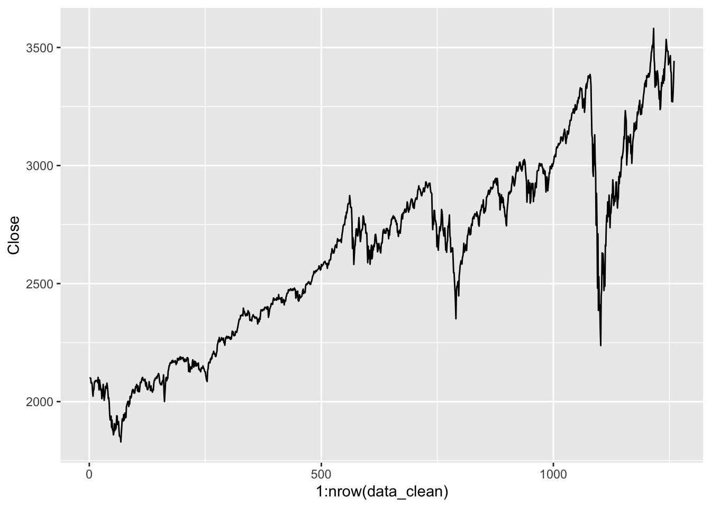
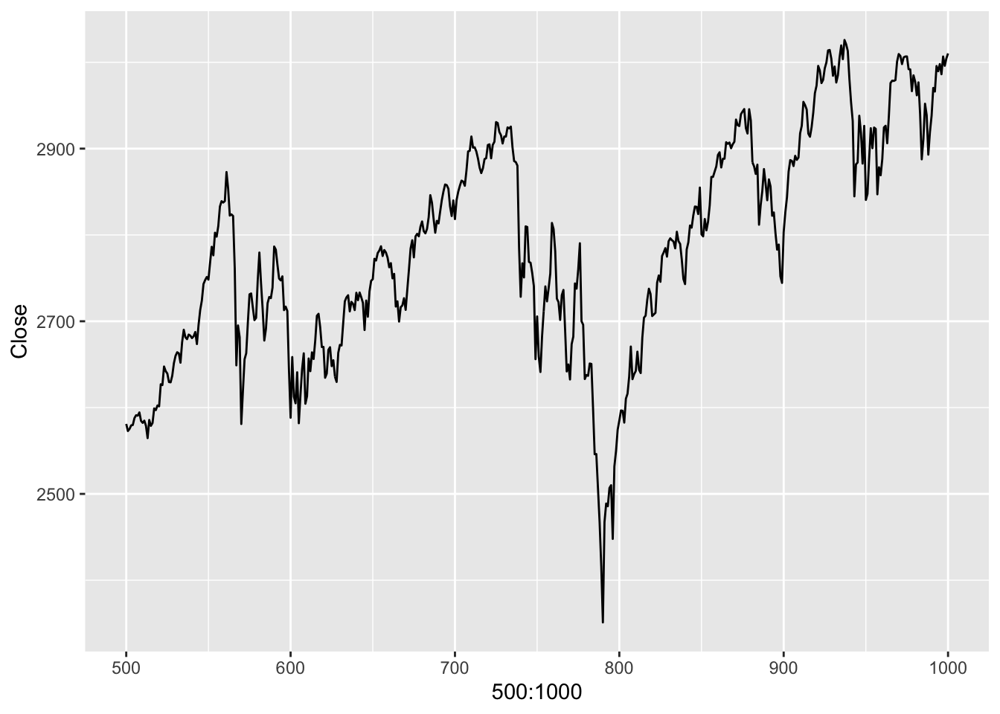
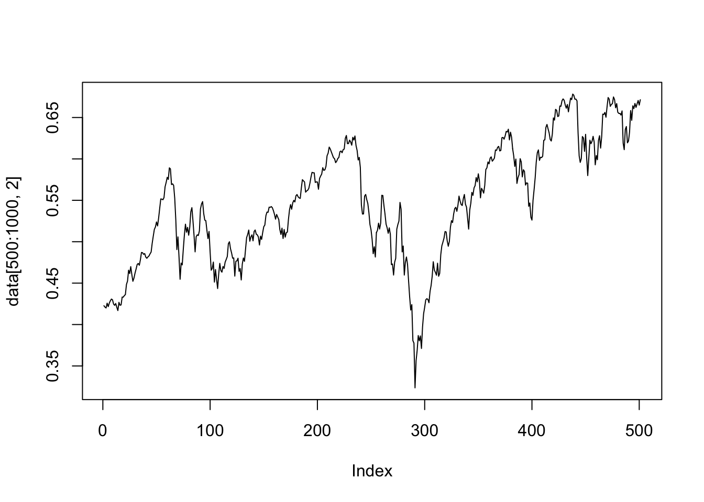
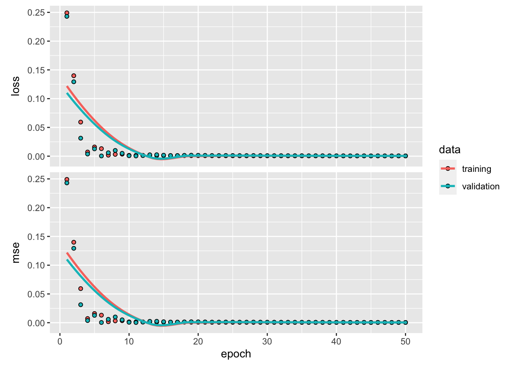
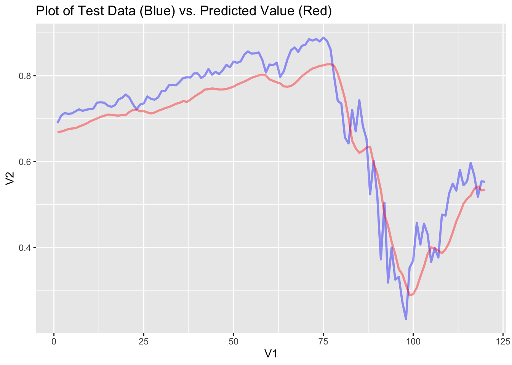
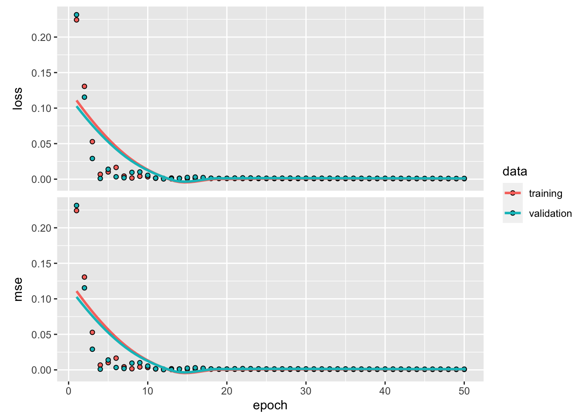
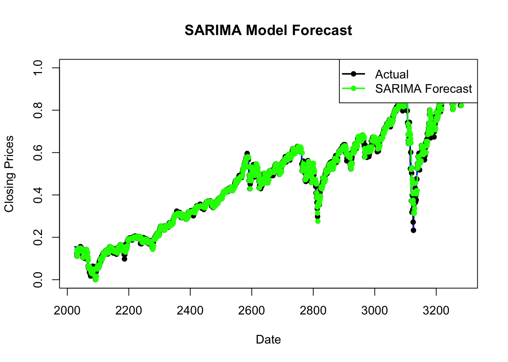
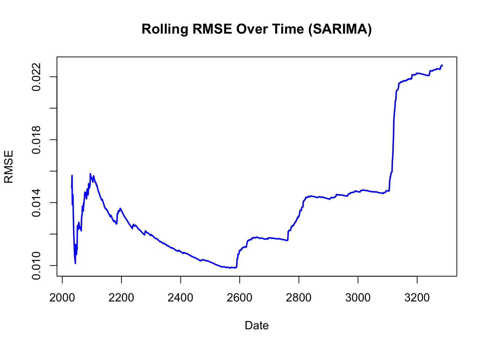

Vignette 10, Predicting S&P 500 Stock Prices with RNN models
Author
Aarya Kulkarni, Ashwath Ekambaram, Rohit Kavuluru
Published
December 12, 2023
Background and Overview of Project
This vignette intends to introduce its audience to the concept of a recurrent neural network (RNN) and build upon that knowledge by providing an application of an RNN by using one to predict the stock price of the S&P 500 index. The goals of this vignette are threefold. Firstly, it aims to build a recurrent neural network model that uses the sequential/time series S&P 500 data to predict future prices. Secondly, it will outline the structure of a recurrent neural network model, explaining how its architecture and training process is different than standard feed forward networks. Lastly, it will compare performance and architecture of the RNN against other predictive models including a feed forward network, as well as SARIMA time-series model.
Import and Filter Data
Data Description
The data we will be using comes from Kaggle. This dataset includes daily observations of data regarding the S&P 500 index. Features include the following:
Feature
Description
Date
Date on which stock was observed
Open
Price at market open
High
Highest price on given trading day
Low
Lowest price on given trading day
Close
Price at market close
Adjusted Close
Price after all applicable splits and dividend distributions on given trading day
# Looking at the dataggplot(data_clean, aes(x =1:nrow(data_clean), y = Close)) +geom_line()

Taking a look at the portion we’re potentially interested in for training.
ggplot(data_clean[(500:1000),], aes(x =500:1000, y = Close)) +geom_line()

Standardize and Normalize Data
Firstly, we’ll clean the data so that each column is standardized, and normalized.
Normalizing and standardizing data before feeding it into LSTM models serves to create consistency in scale and distribution among the input features.Normalization rescales data to a common range, between 0 and 1, ideal for handling varying feature ranges of dynamic data- in this case time series stock prices. Meanwhile, standardization centers data around mean zero and unit variance, which is beneficial for dealing with diverse feature units- such as volume vs price. These preprocessing techniques aid LSTM model convergence by ensuring all inputs fall within manageable ranges, acting as a safeguard from dominant features from skewing learning. They also enhance model robustness by minimizing the impact of outliers and mitigating numerical instabilities during optimization, ultimately allowing the model to capture complex temporal patterns within sequential data.
### Standardize and Normalize datadata <-data.matrix(data_clean[,-1])# Standardize data --> center around mean for each columnmean <-apply(data, 2, mean)std <-apply(data, 2, sd)data <-scale(data, center = mean, scale = std)# Normalize, create func. --> make between 0 and 1 for activation function normalize <-function(x) {return ((x -min(x)) / (max(x) -min(x)))}max <-apply(data, 2, max)min <-apply(data, 2, min)# Normalize data & get rid of adjusted close data <-apply(data, 2, normalize)# Shape of standardized, normalized data is the same as beforeplot(data[500:1000, 2], type ='l')

The Generator Function
Next, we’ll talk about the generator function used to generate training sequences out of sequential, stock price data.
This function creates a specified amount of training observations (batch_size), each the length of the lookback value defined by the user. The step argument specifies when to resample the sequence, after every step timepoints. What this allows for are sequences of training data observations within the min/max indices specified. This allows the model to learn on multiple sequential observations of data rather than the 1 sequence of time series in the raw data. The output of the generator function is the a list of two arrays. The first array contains the set of sequences (# rows = batch_size) of training data (# columns = lookback) for each feature in the dataset. The second array contains the target or the response for each set of sequences (each row) with a shape of (batch_size x 1).
In all, the generator function is crucial to ensure that our model is able to learn on multiple sequences of sequential stock price data, rather than the single sequence of raw data. In a standard feed forward network, not utilizing time-series data, training data would look like a flat representation of data. It could be in the form of individual pixel values of an image, or raw data values that are independent of one another.
LSTM RNN Model using all Features
Recurrent Neural Networks (RNNs) are a class of neural networks designed to process sequential data by retaining information in memory across time steps. They do well in handling time-series data or sequences due to their ability to maintain context and dependencies within the data. Long Short-Term Memory networks (LSTMs), which we’ll be using in this vignette, represent a specialized type of RNN, engineered to address the vanishing gradient problem and better capture long-term dependencies. LSTMs possess a unique architecture, incorporating memory cells, input, forget, and output gates to regulate the flow of information, allowing them to selectively retain or forget information over extended sequences.
Calling the Generator Function and Creating Training Sequences
Here, we’ll talk about the model architecture of the LSTM model that uses all the features in the dataset to predict the adjusted closing price.
A simple dense input layer in Keras treats each input independently without considering any sequential relationships, making it better suited for tabular or non-sequential data. In contrast, an LSTM input layer in Keras is best suited for sequential or time-series data, being able to preserve and represent temporal dependencies across sequences, allowing it to better capture patterns within sequential data for tasks like natural language processing, time-series forecasting, and sequential prediction.
The following code constructs a sequential model where the first layer is an LSTM with 64 units, followed by three densely connected layers with varying units and activation functions, resulting in a final output layer with a single unit, for regression tasks. This structure of an LSTM model in the code represents a network capable of learning patterns in sequential data while mitigating the challenges of vanishing gradients commonly encountered in traditional RNNs.
Looking at the results of history w/ validation split:
plot(history)

Here, we can see that the training and validation loss and MSE follow each other closely. When both training and validation losses, including Mean Squared Error (MSE), closely align, it signifies that the model is likely achieving consistent performance on both the data it was trained on and unseen validation data. This alignment suggests that the model isn’t exhibiting substantial overfitting. The convergence of training and validation losses indicates that the model’s learning potentially isn’t skewed towards the training data but rather captures underlying patterns that are consistent across different datasets.
Factors like increasing the validation split percentage so that the model is able to be tested on more unseen data, or modifying the batch size as to have the model be able to learn on more data at a time, could change change the dynamic between the training and validation loss/MSE.
set.seed(123)V1 =seq(1, length(pred_gen_data[[2]]))# binds V1 as time step (actual) to actual sequence plot_data <-as.data.frame(cbind(V1, pred_gen_data[[2]]))inputdata <- pred_gen_data[[1]][,,]dim(inputdata) <-c(batch_size_plot,lookback_plot, 6)pred_out <- model %>%predict(inputdata)
4/4 - 0s - 344ms/epoch - 86ms/step
plot_data <-cbind(plot_data, pred_out[])p <-ggplot(plot_data, aes(x = V1, y = V2)) +geom_line( colour ="blue", size =1, alpha=0.4)p <- p +geom_line(aes(x = V1, y = pred_out), colour ="red", size =1 , alpha=0.4)p <- p +labs(title ="Plot of Test Data (Blue) vs. Predicted Value (Red)") p

Looking at a graph of the actual testing sequence data (blue) compared to a graph of the predicted test data. We can see that the LSTM network does relatively well in capturing the overall shape of the volatile stock data.
RMSE
Here, we’ll take the RMSE of the selected testing interval, from index 1000 to 1260. The RMSE value will serve as the baseline metric that we can use to compare model performance. Since our model performs a regression task, the output is continuous, we can use this metric reliably.
A note on RMSE:
Root Mean Square Error (RMSE) is a widely used metric to measure the average deviation of predicted values from actual observed values. It calculates the square root of the average of squared differences between predicted and true values, providing a single value that represents the typical magnitude of error in the model’s predictions. Another key feature of RMSE is that it penalizes larger errors more significantly, offering a clear assessment of prediction accuracy.
In the case of the LSTM RNN model using all the features in the dataset, we achieved an RMSE of around 0.06 (changes slightly due to random error with set.seed).
LSTM RNN Model Using only Adjusted Closing Price
Next, we’ll redo our LSTM model using the feature we aim to predict, the adjusted closing price. This new model will use only use past values of adjusted closing price to predict the next adjusted close price using the same LSTM logic as before.
Generator Function, Creating Training Sequences
In this case, we’re generating training sequences with a lookback of 5 days of only the adjusted closing price value.
We’re using the same architecture as before, modifying the input shape of the first LSTM layer in our neural network. This modification allows for the univariate aspect of the model.
Looking at results of history_1v w/ validation split.
plot(history_1v)

Here again, we can see that the training and validation split are very close together, indicating that the model is potentially doing a good job at not overfitting to the data.
Plotting Test Data vs. Predicted
Here, the training sequences generated are using one variable (adjusted closing price) as mentioned before. The generator function has been modified in the generator.R file.
# Plotting actual test data vs. predicted (1 variable)batch_size_plot <-120lookback_plot <-5step_plot <-1set.seed(123)pred_gen <-generator_1v( data,lookback = lookback_plot,delay =0,min_index =1000,max_index =1260,shuffle =FALSE,step = step_plot,batch_size = batch_size_plot)pred_gen_data_1v <-pred_gen()
Let’s look at test data vs predicted values:
V1 =seq(1, length(pred_gen_data_1v[[2]]))# binds V1 as time step (actual) to actual sequence plot_data_1v <-as.data.frame(cbind(V1, pred_gen_data[[2]]))inputdata_1v <- pred_gen_data_1v[[1]][,,]dim(inputdata_1v) <-c(batch_size_plot,lookback_plot, 1)pred_out_1v <- model_1v %>%predict(inputdata_1v)
4/4 - 0s - 335ms/epoch - 84ms/step
plot_data_1v <-cbind(plot_data_1v, pred_out_1v[])p <-ggplot(plot_data, aes(x = V1, y = V2)) +geom_line( colour ="blue", size =1, alpha=0.4)p <- p +geom_line(aes(x = V1, y = pred_out), colour ="red", size =1 , alpha=0.4)p <- p +labs(title ="Plot of Test Data (Blue) vs. Predicted Value (Red)") p
Again, we can see that the univariate model captures the overall trend of the testing data well.
In the case of the LSTM RNN model using all the features in the dataset, we achieved an RMSE of around 0.08. (changes slightly due to random error with set.seed).
Other Predictive Models
SARIMA Model
The first model we can use to predict or ‘forecast’ the S&P 500 stock price can be an auto-regressive time series model. We first have to re-add the ‘date’ column from our original non-standardized dataset so we can use time series forecasting methods on the dataset. We do this below.
library(forecast)
Registered S3 method overwritten by 'quantmod':
method from
as.zoo.data.frame zoo
Attaching package: 'forecast'
The following object is masked from 'package:yardstick':
accuracy
library(lubridate)#Get the dates columndates <- data_clean$Date#Combine dates column with standardized data df <-as.data.frame(data)df <-cbind(Date = dates, df)# Convert 'date' to Date class and set it as the time indexts_data <-ts(df$Close, frequency =1, start =c(year(df$Date[1]), month(df$Date[1])))# Number of days for the rolling windowwindow_size <-6
In the RNN and other models, we usually partition the data into ‘training’ and ‘testing’ so we can train our model then apply it on new data. Here we are using a ‘rolling window approach’, so the concept of distinct training and testing sets is somewhat implicit. As you iterate through the time series data, you use a portion of the past observations (rolling window) to train the model and predict the next observation. In this way, you are continually updating the model with new information and making one-step-ahead forecasts.
# Initialize an empty dataframe to store forecastsforecasts <-data.frame(Date =as.Date(character()), Actual =numeric(), ARIMA =numeric(), SARIMA =numeric())# Perform rolling window forecastfor (i in (window_size +1):length(ts_data)) {# Extract the current window current_window <- ts_data[(i - window_size):(i -1)]# SARIMA Model (Seasonal) sarima_model <-auto.arima(current_window, seasonal =TRUE)# Forecast the next day sarima_forecast <-forecast(sarima_model, h =1)# Store the results in the forecasts dataframe forecasts <-rbind(forecasts, data.frame(Date =time(ts_data)[i], Actual = ts_data[i],SARIMA = sarima_forecast$mean[1])) # Extract the first forecast value }
So, the need for a separate training and testing set, as typically done in traditional model evaluation, is somewhat inherent in the rolling window approach. The testing set, in this case, is essentially the next data point that the model is predicting. The training set is the rolling window of past observations used to fit the model.
#Visualize forecasts for SARIMAplot(ts_data, type ="l", col ="blue", lwd =2, main ="SARIMA Model Forecast", xlab ="Date", ylab ="Closing Prices")lines(forecasts$Date, forecasts$Actual, col ="black", lwd =2, lty =2, type ="b", pch =16)lines(forecasts$Date, forecasts$SARIMA, col ="green", lwd =2, type ="b", pch =16)legend("topright", legend =c("Actual", "SARIMA Forecast"), col =c("black","green"), lwd =2, pch =16)

In the above forecast plot, we can see the SARIMA model does a fairly effective job of predicting the actual values for the S&P 500 stock price. However, we do see some instances like in between day 3000 and day 3200 that the model doesn’t follow the bottom of the ‘valley’ where the stock hits its lowest point.
actual_values <- forecasts$Actualsarima_forecast_values <- forecasts$SARIMA# Remove missing values, if anyactual_values <- actual_values[!is.na(sarima_forecast_values)]sarima_forecast_values <- sarima_forecast_values[!is.na(sarima_forecast_values)]# Calculate squared errorssquared_errors <- (sarima_forecast_values - actual_values)^2# Calculate mean squared errormse <-mean(squared_errors)# Calculate root mean squared errorrmse <-sqrt(mse)# Print RMSE valuecat("RMSE for SARIMA model:", rmse, "\n")
RMSE for SARIMA model: 0.02274396
When assessing the above RMSE value, we have to remember this approach is convenient for time series forecasting so traditional model evaluation metrics (such as Mean Squared Error) might not be directly applicable in this context, as we are continually updating the model with new information. Due to this, a better option would be to visualize the RMSE over time calculated on each iteration. The below plot does this.
rmse_values <-c()# Calculate RMSE for each forecasted pointfor (i in2:nrow(forecasts)) { actual <- actual_values[1:i] sarima_forecast <- sarima_forecast_values[1:i] rmse <-sqrt(mean((actual - sarima_forecast)^2)) rmse_values <-c(rmse_values, rmse)}# Visualize RMSE over timeplot(forecasts$Date[2:nrow(forecasts)], rmse_values, type ="l", col ="blue", lwd =2, main ="Rolling RMSE Over Time (SARIMA)", xlab ="Date", ylab ="RMSE")

Feed Forward Neural Network
This code snippet is setting up a feed-forward neural network, we used this model to compare the accuracy between a FNN and an RNN. A Feed forward Neural Network processes input data sequentially without memory of previous inputs, suitable for tasks with independent elements. In contrast, a Recurrent Neural Network maintains internal memory, allowing it to capture temporal dependencies in sequential data, which models time series data better.
This code starts with sourcing a script called generator.R to access relevant functions. The parameters lookback, step, delay, and batch_size are defined to configure the characteristics of the training data. Then, a data generator (train_gen_5days) is initialized using the generator_5days function, which takes into account the specified parameters, as well as the stock price data (data). The generator is set to cover a specific range of indices (min_index to max_index) from the dataset without shuffling the data. Finally, the generator is invoked to produce batches of training data, and the resulting data is stored in the variable train_gen_data_5days. This approach aligns with the common practice in time series forecasting, where a model is trained to predict future values based on historical sequences.
Next, the simple feedforward neural network using the Keras API with the TensorFlow backend is defined. The network consists of a flatten layer to handle input data with a specific shape, followed by a dense layer with ReLU activation and an output layer with a single unit. The model is compiled using the Adam optimizer and Mean Absolute Error (MAE) loss. It is then trained on input samples (samples) and corresponding targets (targets) for 30 epochs, and the training history is visualized. Finally, the mean squared error (MSE) is calculated based on the difference between the predicted and actual values stored in plot_data.
model <-keras_model_sequential() %>%layer_flatten(input_shape =c(lookback / step , 6)) %>%# Flatten layer to handle the input shapelayer_dense(units =32, activation ='relu') %>%# Dense layer with ReLU activationlayer_dense(units =1) # Output layer with 1 unitmodel %>%compile(optimizer ='adam', loss ='mae')history <- model %>%fit(x = train_gen_data_5days[[1]],y = train_gen_data_5days[[2]],epochs =30,batch_size =32, # Adjust batch size based on your resourcesvalidation_split =0.2)
Out of the four models, the Multivariate LSTM Recurrent neural network performed the best with a Root Mean Square Error value of 0.055. We did not consider the SARIMA model’s value because the model is being continuously trained on the entirety of the data due to the sliding window approach, unlike the other models. The other three models were split into testing and training so there was less data for the model to learn from. The Feed Forward Neural Network had the highest root mean square error value because it is the least optimized for time series data as it does not have a backpropogate feature to adjust the weights after the initial prediction is compared to the ground truth through a loss function, yet it still finished fairly closely behind the Univariate LSTM Recurrent Neural Network.
Model Considerations
Ultimately, the Multivariate LSTM model outperformed the standard feed-forward network in predicting stock price data with a lookback of 5 days due to its ability to capture temporal dependencies and handle sequential data effectively. The Multivariate LSTM did better than the Univariate LSTM, suggesting that temporal dependencies of other features in the data are useful in predicting the adjusted closing price of the S&P 500. The LSTM’s architecture, incorporating memory cells and gates, allows it to retain and utilize information from past time steps, making it good at capturing long-term patterns in stock prices. With a lookback of 5 days, the LSTM can generalize trends and intricate patterns within S&P 500, enabling more accurate predictions compared to a feed-forward network that lacks memory and sequential understanding. Adjusting the lookback value could lead to better model performance, as LSTMs might be better loopbacko larger lookback values, utilizing its memory cells and gate features. Adjusting other hyperparameters like batch size, a moderate value of, say, 32 or 64, could help in training by balancing computation and speeding up model convergence. The SARIMA model is also well suited to predict sequences like stock price data, as its dynamic training using the sliding window approach helps with prediction accuracy. Furthermore, setting an appropriate number of epochs allows the LSTM to iteratively learn and refine its understanding of temporal dynamics, ultimately enhancing its predictive capabilities.